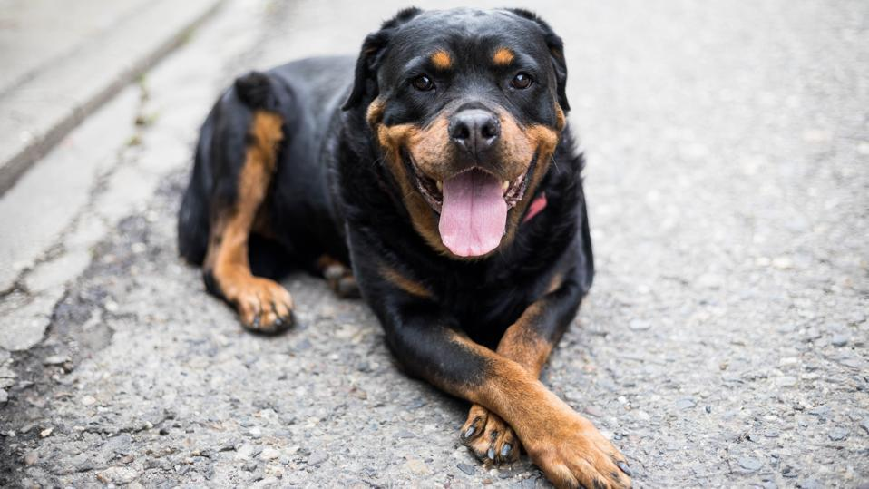

Rottweiler

Information
The Rottweiler (/ˈrɒtwaɪlər/, UK also /-vaɪlər/, German: [ˈʁɔtvaɪ̯lɐ] ⓘ)[1][2] is a breed of domestic dog, regarded as medium-to-large[3][4] or large.[5][6] The dogs were known in German as Rottweiler Metzgerhund, meaning Rottweil butchers’ dogs,[7][8] because their main use was to herd livestock[3] and pull carts laden with butchered meat to market.[7] This continued until the mid-19th century when railways replaced droving. Although still used to herd stock in many parts of the world, Rottweilers are now also used as search and rescue dogs, guard dogs, and police dogs.[9]
According to the FCI Standard, the Rottweiler is considered to be one of the oldest surviving dog breeds. Its origin goes back to Roman times. These dogs were kept as herder or driving dogs. They marched over the Alps with the Roman legions, protecting the humans and driving their cattle. In the region of Rottweil, these dogs met and mixed with the native dogs in a natural crossing. The main task of the Rottweiler now became the driving and guarding of the herds of cattle and the defence of their masters and their property. This breed acquired its name from the old free city of Rottweil and was known as the “Rottweil butcher’s dog”. The butchers bred this type of dog purely for performance and usefulness. In due course, a first rate watch and driving dog evolved which could also be used as a draught dog.[3][10]
More: https://en.wikipedia.org/wiki/Rottweiler.
Fun facts
Rottweilers, also known affectionately as Rotties, are one of the most popular dogs in the United States. They are well known to be powerful, protective, and loyal, famous for their instinct for guarding. But Rottweilers are also easily trained, making them loyal, loving, and confident guardians. Here are some things you might not know about Rottweilers: Although there is no documentation of the Rottweiler’s origins, most people think the breed descended from the herding dogs of ancient Rome. Throughout their long history, they’ve been used to perform many different jobs. As the Roman empire expanded, it needed a way of feeding massive traveling armies of men. They used their dogs to herd livestock and march them along with the army. This was the only viable way for the soldiers to have a steady food supply without refrigeration. Today the Rottweiler participants in herding events, and can keep up with the sheepdogs and shepherds in the field.
More: https://www.akc.org/expert-advice/lifestyle/9-things-you-didnt-know-about-the-rottweiler/.
How to take care of Rottweiler?
https://www.vidavetcare.com/dog-breed/rottweiler/
https://www.petmd.com/dog/breeds/rottweiler
https://www.greencrossvets.com.au/pet-library/dogs/breed-guides/rottweiler-owners-guide/